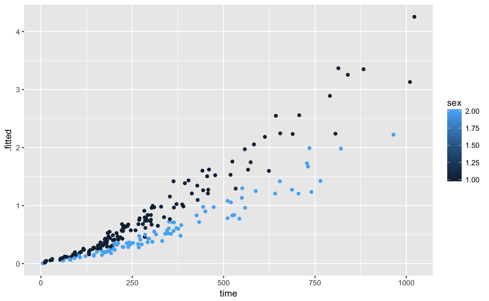

Tidy the coefficients of a Cox proportional hazards regression model, construct predictions, or summarize the entire model into a single row.
# S3 method for coxph tidy(x, exponentiate = FALSE, conf.int = TRUE, conf.level = 0.95, ...) # S3 method for coxph augment(x, data = NULL, newdata = NULL, type.predict = "lp", type.residuals = "martingale", ...) # S3 method for coxph glance(x, ...)
| x | "coxph" object |
|---|---|
| exponentiate | whether to report the estimate and confidence intervals on an exponential scale |
| conf.int | whether to include a confidence interval |
| conf.level | confidence level of the interval, used only if |
| ... | Extra arguments, not used |
| data | original data for |
| newdata | new data on which to do predictions |
| type.predict | type of predicted value (see |
| type.residuals | type of residuals (see |
tidy returns a data.frame with one row for each term,
with columns
estimate of slope
standard error of estimate
test statistic
p-value
predicted values
standard errors
residuals (not present if newdata is provided)
When the modeling was performed with na.action = "na.omit"
(as is the typical default), rows with NA in the initial data are omitted
entirely from the augmented data frame. When the modeling was performed
with na.action = "na.exclude", one should provide the original data
as a second argument, at which point the augmented data will contain those
rows (typically with NAs in place of the new columns). If the original data
is not provided to augment and na.action = "na.exclude", a
warning is raised and the incomplete rows are dropped.
na.action
if (require("survival", quietly = TRUE)) { cfit <- coxph(Surv(time, status) ~ age + sex, lung) tidy(cfit) tidy(cfit, exponentiate = TRUE) lp <- augment(cfit, lung) risks <- augment(cfit, lung, type.predict = "risk") expected <- augment(cfit, lung, type.predict = "expected") glance(cfit) # also works on clogit models resp <- levels(logan$occupation) n <- nrow(logan) indx <- rep(1:n, length(resp)) logan2 <- data.frame(logan[indx,], id = indx, tocc = factor(rep(resp, each=n))) logan2$case <- (logan2$occupation == logan2$tocc) cl <- clogit(case ~ tocc + tocc:education + strata(id), logan2) tidy(cl) glance(cl) library(ggplot2) ggplot(lp, aes(age, .fitted, color = sex)) + geom_point() ggplot(risks, aes(age, .fitted, color = sex)) + geom_point() ggplot(expected, aes(time, .fitted, color = sex)) + geom_point() }#> Warning: X matrix deemed to be singular; variable 9